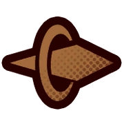
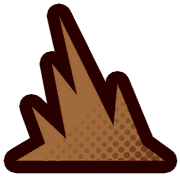

En Limbus Company, las batallas son muy variadas porque existen varios tipos de daño y efectos. Cada tipo de daño tiene sus propias características y puede afectar a los enemigos de formas diferentes. Por eso, es importante entender cómo funcionan estos tipos de daño para comprender bien cómo se desarrollan los combates en el juego.
En este juego la mecanica principal para pelear es usando habilidades, cada habilidad tiene unas monedas, positivas o negativas, esas monedas pueden aumentar o bajar tu poder, cuando 2 personajes chocan habilidades el que tenga mas poder gana y eso se ve a travez de las monedas, el poder base + (Monedas por valor). Para que la moneda tenga mas posibilidades de que sea positiva existe una estadistica conocida como sanity (cordura) esta afecta positivamente o negativamente a las monedas a travez de estas monedas se consiguen puntos de pecado, cada habilidad tiene un pecado distinto, (soberbia,lujuria,ira,gula,envidia,avaricia y pereza ).
Los tipos de daño son, Cortes, Punzadas y contundentes



Los Pecados son un recurso muy importante en este juego, ya que se usan para activar algunas definitivas (ultis) o para hacer mas daño a los enemigos.